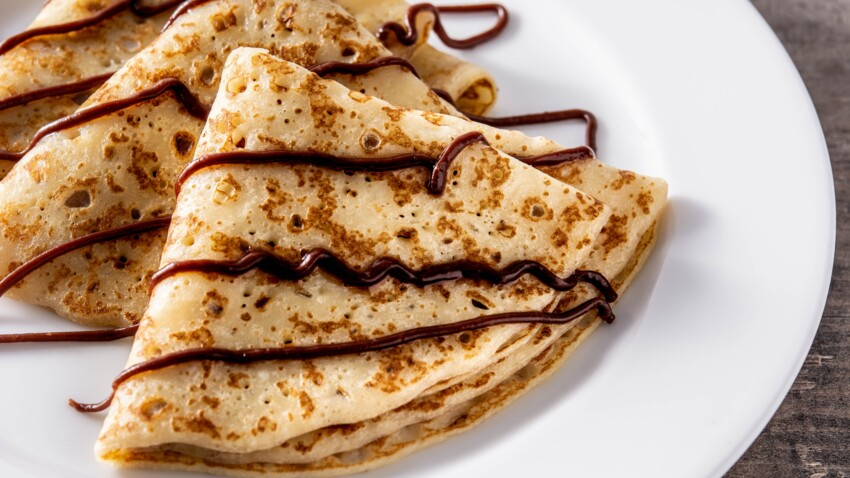

recette de crêpes
Une recette classique de crêpes, délicatement parfumée et irrésistiblement moelleuse. Parfaite pour un petit-déjeuner gourmand ou un dessert réconfortant
Une recette classique de crêpes, délicatement parfumée et irrésistiblement moelleuse. Parfaite pour un petit-déjeuner gourmand ou un dessert réconfortant
Une tarte classique aux pommes, avec une touche de caramel pour une saveur sucrée irrésistible. Parfaite pour le dessert ou le goûter.
Un plat traditionnel berbère composé de semoule de blé et accompagné d'une savoureuse sélection de légumes méditerranéens. Savoureux et équilibré, ce couscous est parfait pour un repas familial.